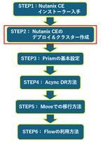
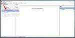
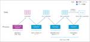
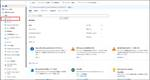

JBS Tech Blog
https://blog.jbs.co.jp/
JBS Tech Blogは、日本ビジネスシステムズ（JBS）の社員が分担して執筆を担当し、技術情報を発信しているブログです！
フィード
【Microsoft×生成AI連載】【最新情報】2024年8月 ロードマップ更新情報
JBS Tech Blog
【Microsoft×生成AI連載】を担当している満江です！今回私からは「Microsoft Copilot」製品に関する最新機能や今後の予定を紹介します。 これまでの連載 Microsoft 365ロードマップについて 最新情報紹介 Microsoft Viva: Viva Pulse - Microsoft Copilotを使用したPulseサマリーの生成 Microsoft Copilot (Microsoft 365): Webからの回答検索 Microsoft Copilot (Microsoft 365): スケジュールされたプロンプト Microsoft Copilot (Mic…
15時間前
Azure Machine Learning AutoMLで作成したAIモデルをプログラムから読み込む方法
JBS Tech Blog
本記事では、Azure Machine LearningのAutoML機能を活用して、機械学習モデルの再推論のプロセスを効率化する方法を解説します。AutoMLはデータ前処理からモデル評価までを自動化し、専門知識が少ないユーザーでも高品質なモデルを作成できます。本記事では、作成したモデルをプログラムから読み込んで再推論する手順に焦点を当て、Anaconda環境の設定やAzure Machine LearningのEnvironments機能を用いた効率的な運用方法について詳しく説明します。
2日前

Nutanix Community Edition 環境の構築 Part2
JBS Tech Blog
前回の記事では、Nutanix Community Eddition(以降はCE)の概要と、Nutanix CEのインストーラーの入手方法を紹介させていただきました。 今回は、いよいよNutanix CEのインストールを行っていきます。 本章での検証範囲 前提条件 Nutanix CE用の仮想マシン設定と作成 デプロイ初期設定 Nutanix CE クラスター作成 SSH接続 Nutanixクラスター作成 Prism(Nutanix クラスター)にログイン 最後に 本章での検証範囲 本記事では、前回の記事で紹介した6ステップのうち、ステップ2の「Nutanix CE デプロイ＆クラスター作成」…
2日前

データベースクライアントのCA証明書を更新する方法 【Amazon RDSの証明書「rds-ca-2019」の期限切れに伴う証明書更新対応】
JBS Tech Blog
2024年8月22日にAmazon RDSのCA証明書（rds-ca-2019）が期限切れとなり、新しい証明書（rds-ca-rsa2048-g1）への更新対応が必要となります。利用しているAWSアカウント内に、有効期限が切れる証明書を使用しているAmazon RDSやAmazon Auroraデータベースが存在する場合、以下メール内容にて通知が届いているとのことです。本記事では、Amazon RDSのCA証明書更新対応におけるデータベース（以下、DB）クライアント側での対応内容のうち、DBクライアントのCA証明書更新と接続文字列での証明書パス更新方法について記載します。 概要 DBクライアン…
3日前
データベースクライアントのSSL/TLS証明書の利用を確認する方法 【Amazon RDSの証明書「rds-ca-2019」の期限切れに伴う証明書更新対応】
JBS Tech Blog
2024年8月22日にAmazon RDSのCA証明書（rds-ca-2019）が期限切れとなり、新しい証明書（rds-ca-rsa2048-g1）への更新対応が必要となります。利用しているAWSアカウント内に、有効期限が切れる証明書を使用しているAmazon RDSやAmazon Auroraデータベースが存在する場合、以下メール内容にて通知が届いているとのことです。本記事では、Amazon RDSのCA証明書更新対応におけるデータベース（以下、DB）クライアント側での対応内容のうち、DBクライアントからSSL/TLS証明書を使用した暗号化接続を行っているかどうかの確認方法について記載します…
4日前
Oracle Enterprise Manager Cloud Control による監視設定
JBS Tech Blog
Oracle Enterprise Manager Cloud Control (OEM CC) の紹介をしてきましたが、今回は監視を設定し、しきい値を超えた監視項目についてメールで通知する設定を紹介します。 これまでの OEM CC に関する記事はこちらを参照してください。 Linux サーバーでの Oracle Enterprise Manager の導入方法 - JBS Tech Blog Oracle Enterprise Manager Cloud Control の運用 - JBS Tech Blog Oracle Enterprise Manager Cloud Control …
5日前
【Microsoft×生成AI連載】【やってみた】Microsoft EdgeのDevToolsでCopilot機能を使ってみた 1
1
JBS Tech Blog
Microsoft EdgeのDevToolsでCopilot機能を使ってみた
7日前
Power AutomateでSharePointリストの「はい・いいえ」列をフィルターする方法
JBS Tech Blog
Power AutomateでSharePointリストの「はい・いいえ」列を正確にフィルタリングする方法とその注意点を解説します。
9日前

Snowflakeの機能を用いたSlowly Changing Dimension Type 2
JBS Tech Blog
日本ビジネスシステムズでデータエンジニアをしている土井です。データモデリングの勉強をしている過程で、『Data Modeling with Snowflake』という良書に出会いました。同書を読破したアウトプットとして、本記事ではSlowly Changing Dimension（以下、SCD）のType 2をSnowflakeネイティブの機能で実装してみたいと思います。 SCD概要 SCDとは？ SCD Type 2とは？ 事前準備 前提条件 オブジェクト作成 処理実行 業務システムの変更～DWHへのロード Type 2処理 まとめ SCD概要 SCDとは？ 一言でいうと、「データウェアハウ…
9日前
Power Automateで「接続が無効」になっている場合のトラブルシュート
JBS Tech Blog
Power Automateで”新しいデザイナー”への切り替えが可能になってから、新規フローを作成する時などに「以前は使用できた接続が無効になっていた」ということはないでしょうか。 本記事では「接続が無効です。完全な詳細を読み込むために接続を更新してください」と表示されている場合のトラブルシュートについてご紹介します。 エラーメッセージ トラブルシュート1"新しいデザイナー"のトグルをオフにして接続を修正する トラブルシュート2：接続の削除および再作成 STEP1：既存の接続を削除する STEP2：新規で接続を作成する STEP3：既存のフローでの接続の切り替え まとめ エラーメッセージ エラ…
11日前

Microsoft Entra IDの多要素認証やセルフパスワードリセットを新しい認証方法ポリシーに移行する方法
JBS Tech Blog
Microsoft Entra IDのレガシー多要素認証（以下、MFA）とレガシーセルフパスワードリセット（以下、SSPR）が2025年9月30日に非推奨になります。 もし、現時点で利用している場合は、新しいポリシーに移行する必要があります。 本記事では、Microsoft Entra IDの認証方法ポリシーを移行する方法について紹介します。 現在の情報確認方法 レガシーMFAポリシーの設定確認 レガシーSSPRポリシーの設定確認 新しい認証方法ポリシーの確認 移行開始 移行状況の確認 移行状況を「移行が進行中」へ変更 対応ポリシー レガシーMFAポリシーを認証方法ポリシーへ移行 レガシーSS…
11日前

【Microsoft×生成AI連載】【やってみた】Copilot StudioのCopilotのチャット画面の見た目を変更してみた
JBS Tech Blog
Copilot Studioで作成したCopilotを展開して、そのデザインを変更してみました。
15日前
【Azure Lab Servicesを語る：第3話】Azure Lab Servicesのコストの考え方と利用時間の管理機能
JBS Tech Blog
Azure Lab Servicesｍｐコスト面の考え方や、コスト削減にもつながる利用時間の管理機能について紹介しています。
15日前
AzureとExpressでアプリケーションを素早く展開する方法
JBS Tech Blog
Node.jsフレームワークExpressを使ってAPIを作成し、Azureにデプロイする方法を解説。シンプルなコードとAzureを用いた簡単なデプロイ手順が魅力です。
15日前
Nutanix Community Edition 環境の構築 Part1
JBS Tech Blog
この記事では、Nutanix Community Eddition(以下、Nutanix CEと記載)の基本概要から設定方法、実際に利用する際のメリットと注意点について記載します。 自宅に小規模なラボ環境を構築したい方や、HCI技術に興味のある方にお勧めの記事となっています。 Nutanix Community Editionについて Nutanix CE 環境構築の流れ STEP1：Nutanix CE インストーラーの入手 本章での検証範囲 前提条件 Nutanix CE インストーラーの入手手順 最後に Nutanix Community Editionについて Nutanix CEは、…
16日前
【Google Workspace】ドメインの種類について
JBS Tech Blog
Google Workspaceでは、ドメインの登録が必要です。 登録したドメインがGoogle Workspace上のウェブサイトやメールアドレスで利用されますが、利用用途により種別が複数存在します。 実際にドメインを登録する際に「どちらで登録すればよいかわからない」ことがないように、それぞれのドメインの違いについて解説します。 概要 ドメイン種別の解説 プライマリドメイン セカンダリドメイン ユーザーエイリアスドメイン 補足：テストドメインエイリアス 各ドメインの比較 まとめ 概要 Google Workspaceへ申し込みをする際に使用したドメイン(プライマリドメイン)の他に、組織や企業…
16日前
Intuneより配布したVolume Purchase Programアプリの自動アップデート制御について
JBS Tech Blog
AppleのVolume Purchase Program（以下、VPP）から購入したアプリをIntuneを通じて配布する際、デフォルトでは自動更新が設定されていますが、場合によっては「ユーザーによる更新を避けたい」や「更新のタイミングを一元管理したい」といった要望が考えられます。 この記事に従って設定を行うことで、更新のタイミングを含め、管理者がコントロールできるようになります。 VPPアプリとは 設定内容 Intune管理センターからの設定手順 設定反映 最後に VPPアプリとは VPPとはApple Business Managerに統合されている機能企業で利用するiOS/macOSなど…
17日前
内部犯行を防げ！MDCAで不正なアプリ利用を検知！ Part 2
JBS Tech Blog
本記事では、Microsoft 365 の CASB 製品である、Microsoft Defender for Cloud Apps（MDCA）について紹介します。
17日前
InterScan for Microsoft Exchangeインストール方法
JBS Tech Blog
InterScan for Microsoft Exchangeの検証を行う際、簡易的なインストール手順が見つからず苦労しました。 忘備録として、本記事に手順を残しておこうと思います。 本記事はインストール手順のみとなりますので、InterScan for Microsoft Exchangeの概要などは下記リンクにある公式サイトの情報をご参照ください。 InterScan for Microsoft Exchange | トレンドマイクロ | トレンドマイクロ (JP) (trendmicro.com) 前提条件 インストール手順 さいごに 前提条件 今回のインストールは下記環境にて行いまし…
18日前
Azure Communication Servicesを使ってメールを送信する方法（1）
JBS Tech Blog
今回はAzure Communication Servicesの利用方法をご紹介します。次回はAzure Communication ServicesとLogic Appsを連携する際のプロセスをご紹介します。
19日前
DevOps Azure Piplinesの構築手順 -Microsoft Entra ID操作編-
JBS Tech Blog
Azure App Service 等を使用したの Web アプリの公開にて、DevOps Piplines を使用してデプロイを行うと、DevOps のリポジトリに登録されているソースコードを自動的にビルド・デプロイを行うことができます。 本記事では、デプロイを行うための Azure Piplines の構築手順について、数回に分けて紹介していきたいと思います。 初回の今回は、DevOpsでの操作前に必要となる Microsoft Entra ID（以下、Entra ID）での操作手順を紹介します。 前提 認証用Entra IDアプリ作成 証明書発行・アップロード クライアントシークレット発…
22日前
【Microsoft×生成AI連載】【やってみた】LoopのCopilotを試してみる
JBS Tech Blog
オンラインコラボレーションツールであるLoopにおけるCopilotの機能を紹介します。
22日前
Apache NiFi Statelessの使い方
JBS Tech Blog
今回は以前別の記事で紹介したApache NiFiについて、通常とは違う処理エンジンとして実装されているStatelessエンジンについて簡単に紹介します。 Apache NiFiについて紹介した記事は以下のリンクからどうぞ。 blog.jbs.co.jp NiFi Statelessとは NiFI Statelessの特徴 NiFI Statelessのメリットデメリット NiFi Statelessの使い方 NiFi 1.x NiFi 2.x まとめ NiFi Statelessとは バージョン1.10.0で実装された機能で、デフォルトのNiFiランタイムとは別に開発された軽量なState…
23日前
【CyberArk】パスワード管理の概要 運用手順Part2
JBS Tech Blog
本記事は、運用手順Part2のパスワード管理の概要です。それぞれの説明および実際の作成/設定手順、運用の一例を解説していきます。 運用手順part1の過去記事は下記をご覧ください。 blog.jbs.co.jp パスワード管理について パスワード検証 パスワード調整 パスワード変更 パスワード管理手順 パスワード検証 パスワード調整 パスワード変更 最後に パスワード管理について CyberArk Privileged Access Manager（PAM）製品の最大の特徴として、パスワードの自動更新をさせてユーザーはパスワードを知りえない運用させるパスワード管理があげられます。 特権IDは悪…
23日前
Azure Load Balancer を Basic SKU から Standard SKU へアップグレードしてみた
JBS Tech Blog
Azure Load Balancer を Basic SKU から Standard SKU へ自動スクリプトを使ってアップグレードしてみた結果をまとめました。
24日前
VMWare ESXiのコンフィグバックアップ/リストア手順
JBS Tech Blog
本記事では、VMWare ESXi（以下、ESXi）のコンフィグバックアップ/リストア手順について記載します。 ESXiの設定情報を簡単にバックアップすることができるので、検証時などに利用していただければと思います。 環境情報 コンフィグバックアップ コンフィグリストア おわりに 環境情報 本手順の実施環境は以下になります。 ESXi 8.0U2b コンフィグバックアップ まず、コンフィグバックアップを取得します。 1. Tera Termなどのターミナルソフトを使用して、ESXiにSSHで接続します。 2. 設定をストレージに同期させるために、以下のコマンドを実行します。 # vim-cmd…
24日前
Azure Machine LearningでJetBotのAIモデルをトレーニングする
JBS Tech Blog
Azure Machine Learning上でJetBotで動くAIモデルのトレーニングを行うMLパイプラインを構築します。
24日前
オープンデータを利用して Microsoft Fabric を利用してみる
JBS Tech Blog
Microsoft Fabric を体験してみることを目的に、オープンデータを使ってレポートを作成してみました。
1ヶ月前